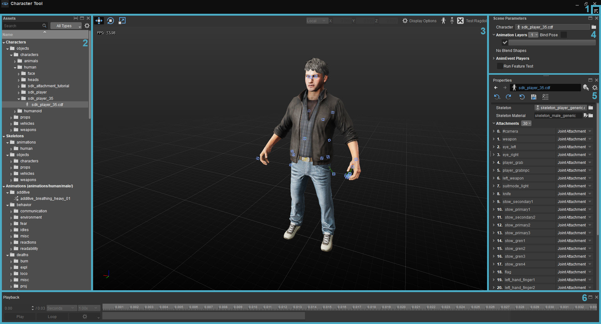
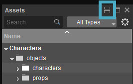
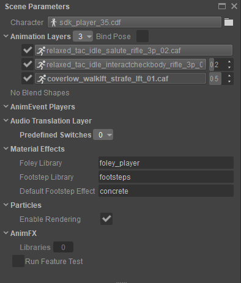

Обзор
Character Tool используется для настройки определений персонажей путем импорта ресурсов, созданных с помощью сторонних инструментов, и предоставления их для использования в CRYENGINE. Полностью авторский персонаж обычно состоит из моделей, скелета, физических свойств и соответствующего набора анимаций. Инструмент также обеспечивает интерактивное управление и настройку анимации, а также настройку прокси-сервера коллайдера. Последний используется для взаимодействия с физическим миром в игре.
Чтобы открыть Character Tool, перейдите в Инструменты -> Анимация -> Character Tool.

Вот четыре основных компонента UI Character Tool:
1. Меню
Меню в Character Tool имеет четыре подменю:
Файл
| Вариант | Описание |
|---|---|
| Новый персонаж... | Создайте нового персонажа с нуля. |
| Открытый персонаж... | Откройте уже сохраненного персонажа. |
| Недавние персонажи | Показывает список недавно открытых файлов персонажей и их расположение. |
| Сохранить все | Сохраняет все измененные активы. (Активы, которые были изменены и еще не сохранены в этом сеансе CT). |
| Импортировать слои анимации | Импортировать ранее экспортированные слои анимации. |
| Экспортировать слои анимации | Экспортировать существующие слои анимации. |
| Очистить скомпилированные анимации... | Показывает окно, позволяющее выполнить пакетную очистку кеша компиляции i_caf. |
| Пересохранить AnimSettings... | Показывает окно, позволяющее выполнить пакетное принудительное сохранение всех файлов настроек анимации. |
| Импортировать FBX |
Также можно импортировать весь FBX, включая скин, анимацию и скелет, перетащив его в область просмотра Character Tool. Однако в этом случае скины не будут автоматически прикреплены к персонажу. Вместо этого рекомендуется перетащить FBX в браузер ресурсов, а затем открыть персонажа в Character Tool. |
Посмотреть
Показывает или скрывает различные панели внутри Character Tool.
Макет
| Вариант | Описание |
|---|---|
| Сохранить макет... | Сохраняет макет Character Tool. |
| Удалить | Удаляет сохраненный макет. |
| Сбросить настройки по умолчанию | Сбрасывает макет инструмента «Символ». |
Помощь
Открывает страницу документации для этого инструмента.
2. Активы
Активы панель является ядром Character Tool UI. По умолчанию он располагается в левой части окна.
Он дает обзор всех активов, связанных с персонажем.
Как только вы выберете интересующую вас запись, ее свойства появятся в Свойства панель с правой стороны.
Контекстное меню (щелчок правой кнопкой мыши)
Каждый элемент в дереве имеет контекстное меню с доступными действиями. В зависимости от того, какой тип актива вы выбрали, это контекстное меню может состоять из любого количества следующих опций:
| Вариант | Описание |
|---|---|
| Копировать имя | Копирует имя выбранной записи актива в буфер обмена. |
| Копировать путь | Копирует путь к файлу выбранной записи актива в буфер обмена. |
| Вставить выделение | Выбирает запись актива на основе пути к файлу, содержащегося в данный момент в буфере обмена. |
| Вернуть | Возвращает измененный актив обратно в его последнее сохраненное состояние. |
| Сохранить | Сохраняет измененный ресурс в отдельный файл. |
| Сохранить как... | Сохраняет измененный ресурс в другой файл. |
| Удалить | Удаляет актив (полностью). |
| Показать в проводнике | Показывает файл или файл *.pak, содержащий ресурс, в проводнике Windows. |
Для Анимации, также доступны следующие варианты:
| Вариант | Описание |
|---|---|
| Экспортировать HTR+I_CAF (с потерями) | Экспортирует сжатый анимационный ресурс (caf) обратно в формат i_caf. Сгенерированный файл i_caf будет содержать артефакты сжатия, возникшие в процессе компиляции caf. |
| Принудительная перекомпиляция | Очищает кеш компиляции i_caf для выбранного анимационного ресурса и повторно сжимает его. |
| Создать шаги | Отображает окна, позволяющие автоматически генерировать события анимации шагов для выбранного анимационного актива. |
Фильтрация
Есть два способа отфильтровать дерево на панели «Ресурсы»:
- С помощью Панель поиска и введите часть имени искомого ресурса (например, «strafe» для всех ресурсов/анимаций и т. д., содержащих «strafe»)
- С помощью раскрывающееся меню рядом с панелью поиска для отображения: Все типы, Анимация, Персонажи, Сжатие и Скелеты.
Несколько панелей браузера активов
Вы можете иметь несколько экземпляров Активы панель открыта. Для создания нового используйте команду Разделить панель кнопка в заголовке Активы панель:

Кнопка «Разделить панель»
Столбцы
Обратите внимание, что щелчок правой кнопкой мыши по заголовку дерева (где Имя отображается строка) открывает контекстное меню, которое позволяет отображать дополнительные столбцы, например Размер, Пак и Аудио события.
3. Окно просмотра
Здесь будет показан загруженный персонаж.
В окне просмотра используется стандартная навигация Sandbox: WASD для движения, RMB для вращения камеры и Средняя кнопка мыши для панорамирования камеры.
В правом верхнем углу вы увидите четыре кнопки, Параметры отображения, Редактировать прокси, Очистить прокси и Тест Рэгдолла.
Параметры отображения
Параметры отображения определяют, как сцена отображается в Character Tool. Эти настройки не сохраняются в файлах персонажей, они предназначены исключительно для предварительного просмотра.
Редактировать прокси
Здесь вы можете создавать и редактировать прокси для вашего персонажа. Смотрите здесь для получения дополнительной информации.
Очистить прокси
Удаляет все прокси с персонажа.
Тест Рэгдолла
Запускает экземпляр PhysDebugger с текущей ragdoll.
4. Параметры сцены
Сцена настраивается только для предварительного просмотра и состоит из:

| Параметр | Описание |
|---|---|
| Персонаж | Вы можете использовать эту запись для загрузки нового персонажа, нажав на значок Папка кнопка. (это альтернативный способ выбора персонажа вместо выбора на панели дерева ресурсов слева). |
Слои анимации | Здесь настраиваются проигрываемые анимации. Всякий раз, когда вы выбираете анимацию в Активы панели, один из них будет назначен активному слою анимации (выделен жирным текстом и нажата кнопка). Вы можете добавить новые слои анимации, используя маленькую кнопку, расположенную рядом с ним. Удалить слои анимации можно через контекстное меню (RMB на номере слева от кнопки слоя). Смешивание пространств, позы прицеливания и взгляда предоставляют дополнительные настройки. |
| Смешивание фигур | Показывает ползунки формы перехода, если персонаж содержит формы перехода. |
AnimEvent игроков
5. Свойства
На панели «Свойства» может отображаться множество свойств в зависимости от того, что выбрано. См. эта страница для получения подробной информации.
6. Воспроизведение
Воспроизведение Панель внизу можно использовать для прокрутки временной шкалы и предоставляет такие параметры воспроизведения, как циклическое воспроизведение анимации и скорость воспроизведения. Вы также можете изменить временную шкалу, которая будет представлена в секундах, кадрах, или нормализовать временную шкалу от 0 до 1. Параметры механизма обеспечивают дополнительный контроль над организацией представления временной шкалы.